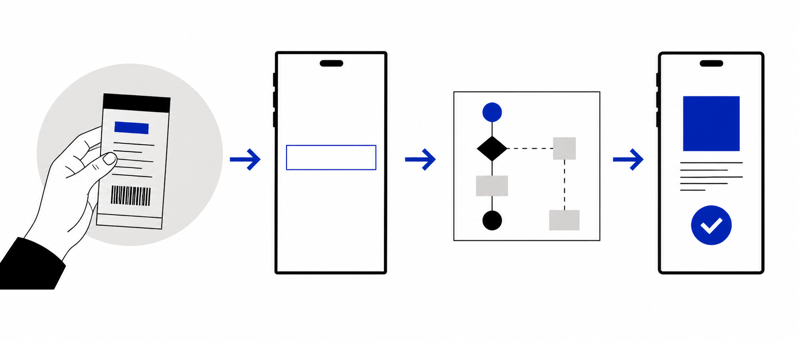
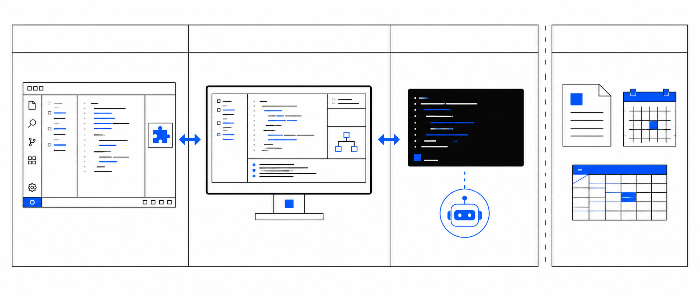
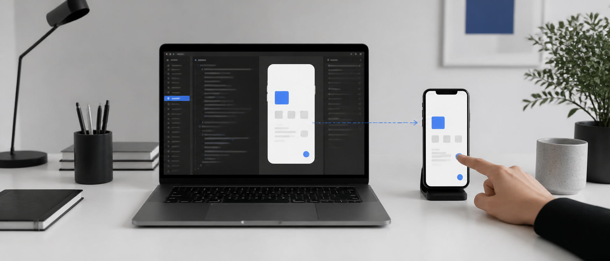

02 / 27 · SPEAKER
ABOUT LUOCHEN

Agent Harness 工程师
× 全栈构建者
我把 AI 工程、公开写作和真实交付连在一起；这节课只讲一件事：让你亲手做出第一个可验证的小程序。
代码｜开源 PR 与 AI 编程实战产品｜从需求到可运行交付输出｜文章、课程与公开视频
不是三小时正式上线；是做出一个能运行、能真机预览、能被验证的 MVP。
我把 AI 工程、公开写作和真实交付连在一起；这节课只讲一件事：让你亲手做出第一个可验证的小程序。
先把需求讲明白；再让它在真机跑通；有余量才调优并整理交付。
前 15 分钟完成基础讲解；第 75—85 分钟与 130—140 分钟各休息 10 分钟；主路径没跑通时，调优时间自动回归修错。
它不是“躺赚捷径”：本课只验证一个工具能否解决问题，不承诺流量、收益或正式上线。
先把“做什么、谁判断、怎样验收”说清。
一场景，一闭环。
AI 写，工具预览，手机验。
需求、边界、问题、验收。
需求 + 验收标准。

用户看见、点击和使用的页面。
接收请求，执行规则，处理结果。
还没准备好的菜，先保存起来，需要时再取。
单页本地工具，可能只需要前端。
不用自己买服务器，也能执行后端逻辑。
保存用户、订单和业务数据。
放图片、文件等较大的材料。
没有登录、数据共享需求，就先不加。

谁，在什么时候，为何要用。
默认不登录、不支付、不接数据库。
你必须知道什么结果叫正确。
你是产品负责人；AI 是执行很快、但不了解上下文的实习生。
场景、输入、规则、输出。
看看能不能一眼理解。
用自己的话复述场景和结果。
把一处看不懂的地方补清楚。
140 分钟，含两次休息；按三步把一个小程序做出来。
把要做什么写清楚，也让别人看得懂。
有必要再让 AH 生成图标和 UI。
每批完成先检查，再决定下一批。
报错和结果都给证据，不让 AI 猜。

喝水、活动、回来后再看结果；不是让人连续高强度坐满三小时。
不要一次性把所有任务交出去。
每批完成先检查，方便及时调整。
在开发者工具点击“+”。
选 AI 刚才写入的同一个项目文件夹。
有自己的 AppID 就配置；没有则按可预览边界处理。
不要直接相信 AI 的“已完成”。
页面名或路由。
按顺序写操作。
把结果截图下来。
写清正确状态。
Console 错误和截图一起给。
不要顺手重构。
离开屏幕十分钟；回来后用手机和同伴，重新判断这条路径是否真的能跑通。

与人工验算一致。
有提示，不崩溃。
边界值有反馈。
状态不互相污染。
初始状态正确。
扫码后按你的需求复走。
主路径没通过？这 25 分钟继续修错；不是硬塞“美化作业”。

不让紫色渐变随意出现。
需要图标时换图标库资产。
让核心输入和结果最显眼。
每次改完都重新点主路径。
当你再次看到正确结果，才允许进入交付整理。
可重新导入的完整项目目录。
真机截图或核心流程录屏。
六项测试的通过记录。
明确没做什么、风险在哪里。
把功能和用户场景交给 AI 列候选；最终按平台规则人工确认。
它像微信号，是小程序独一无二的标识。
备案不是一次点完；两次备案往往是最长的等待环节。
编译或预览版可以自己用；别人使用还需要真实上线。
把第一版做小，把每一步做实。
先科普，再动手；有余量才调优。
谢谢你一起完成这 3 小时。
欢迎告诉我：哪里有帮助，哪里还可以更好。